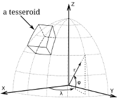

Tesseroids v1.1.1
Forward modeling of gravitational fields in spherical coordinates

A suite of open source programs for the forward modeling of gravitational fields in spherical coordinates. It can model the gravitational potential, acceleration, and gradient tensor. All programs run on the command-line and can be easily plugged into shell scripts and workflows.
So, what is a tesseroid?
The geometric element used in the modeling processes is a spherical prism, also called a tesseroid. Tesseroids are useful to model large geologic structures where the Earth's curvature must be taken into consideration. However, the Tesseroids package also contains programs for modeling using right rectangular prisms, both in Cartesian and spherical coordinates.
Documentation
View the latest documentation online, courtesy of Read the Docs.
Go to the docs for known issues, installing, usage, theoretical background, and some examples.
Citing
If you use Tesseroids in your research, please consider citing it in your publications:
Uieda, L. (2013), Source code and compiled binaries for software Tesseroids, figshare, http://dx.doi.org/10.6084/m9.figshare.786514, doi:10.6084/m9.figshare.786514.
See the Citation section of the docs for more information.
License
Tesseroids is BSD licensed. This means that it can be reused and remixed with fewer restrictions.
Older versions
You can download older versions of Tesseroids from GitHub (v1.1 and above) and Google Code (v1.0 and below).
Let me know what you think
For help, questions, comments, suggestions, or just to chat, contact Leonardo Uieda by e-mail, Twitter, or Google+. An even better option is to file an issue on Github.